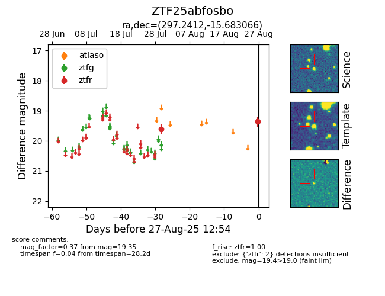

Target ZTF25abfosbo at 2025-08-27 17:59, see:
FINK: fink-portal.org/ZTF25abfosbo
Lasair: lasair-ztf.lsst.ac.uk/objects/ZTF25abfosbo
ALeRCE: alerce.online/object/ZTF25abfosbo
alt names
ZTF25abfosbo (ztf,fink)
coordinates:
equatorial (ra, dec) = (297.2412,-15.68307)
galactic (l, b) = (24.9037,-19.63856)
photometry
last ztfr=19.35
2 ztfr detections
